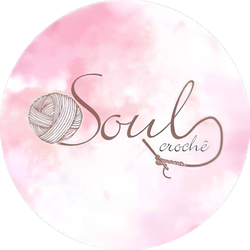
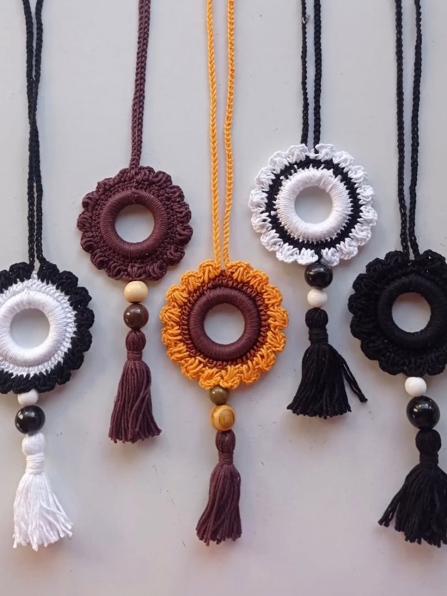
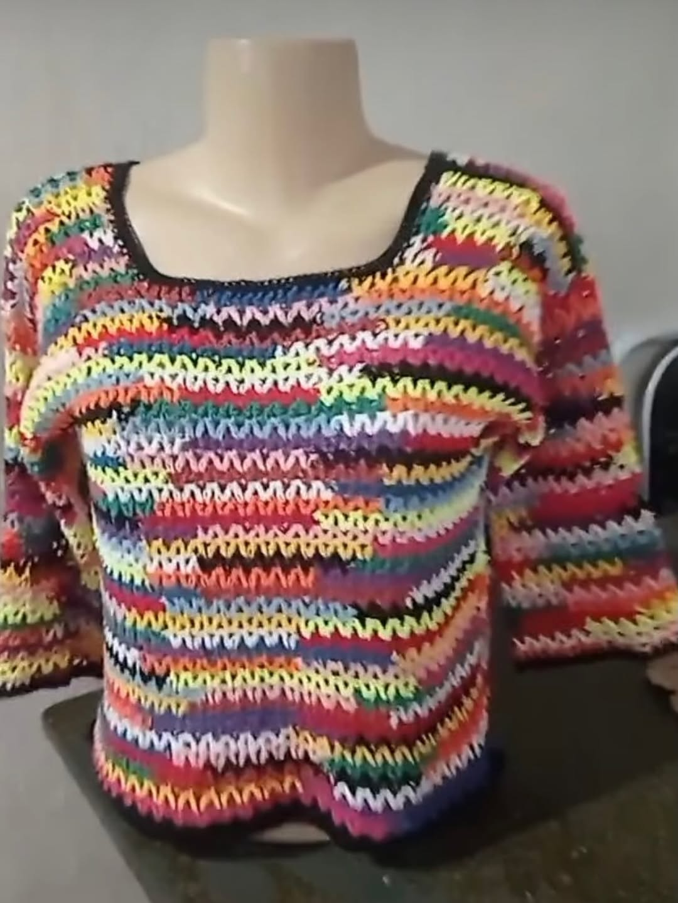
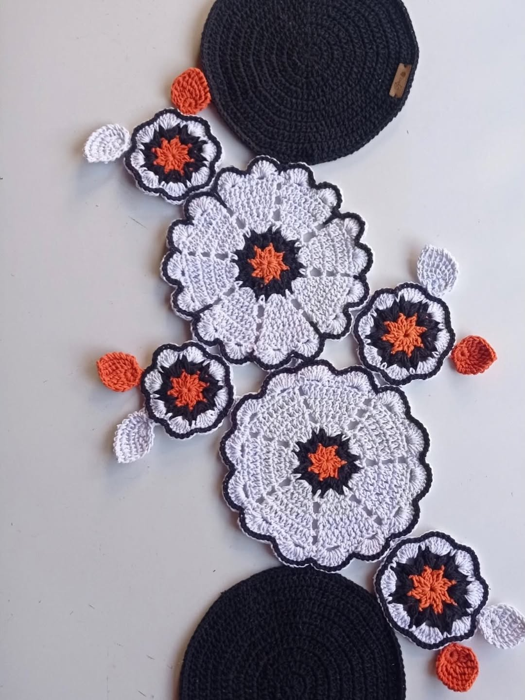

Presentes Artesanais O crochê que vem da alma
Peças únicas e encantadoras feitas a mão com todo carinho para tornar seu estilo único.
Encomendar via WhatsApp
Por que escolher nossas peças?
100% feito a mão
Cada peça é única, criada com dedicação e amor, respeitando os detalhes e a qualidade artesanal.
Fios 100% recicláveis
Utilizamos apenas fios de algodão reciclável, seguros e macios para seu melhor conforto.
Design Exclusivo
Personalize cores, tamanhos e detalhes. Criamos a peça ideal para você.
Nossos produtos
Confira alguns de nossos produtos

Acessórios
Colares feitos com linha 100% algodão reciclável e argola de madeira.
Ver mais produtos
Vestuário
Peça feita com linha 100% algodão reciclável em várias cores.
Ver mais produtos
Artigos de casa
Trilho de mesa feito com barbante 100% algodão reciclável.
Ver mais produtosO que nossos clientes dizem
Amor e carinho em cada depoimento
"Comprei um vestido para minha bebê e amei! A qualidade é incrível e o carinho no acabamento é
visível. Super recomendo!"
— Juliana Santos
"Presenteei minha sobrinha com um coelhinho personalizado. A família toda se encantou! É um
produto
único e cheio de amor."
— Fernanda Lima
"Adorei! a bolsa chegou bem embalada e exatamente como mostrado nas fotos. Minha filha amou."
— Mariana Costa